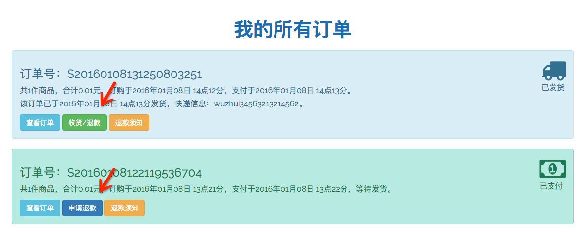
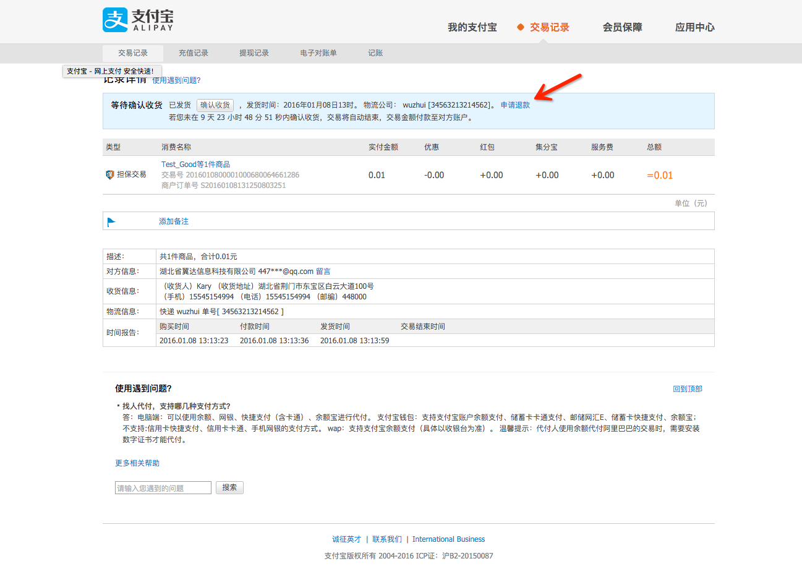

用户提出退货要求分为退款和退货
1、用户下单并且付款之后，确认收货之前，可以申请退款。根据支付宝的要求必须在买家支付后24小时以后，未发货的情况下不能提出申请退款，此时如果买家想立即取消订单，请直接通过电话联系我们，提出退款申请。退款方法如下，在我的订单中找到已付款或者已发货的订单，点击申请退款
系统将跳转到支付宝页面，登录支付宝账户，点击申请退款，填写相关信息即可。
提交申请后，我们将会处理申请，请等待。
如果您已经收货，但未确认收货，此时退款还应退货。在您提交申请之后，我们会根据您的申请决定是否同意您的退货申请，如果同意您的退货申请，将会通过短信通知您退货，此时请将商品邮寄至指定地址（点击我的订单->退款查询登录支付宝页面查看指定退货地址），收到退货商品后，将会再次与您联系，完成退款操作。
您的退款被拒绝后如有疑问请咨询九资游客服：0713-5077888。
2、买家一旦确认发货，该支付宝订单将无法被重新打开，无法提交退款申请，此时只能卖家和买家进行协议退货，买家将货物寄回后，卖家打款至买家。
3、买家在未付款之前可以直接取消订单。
返回首页